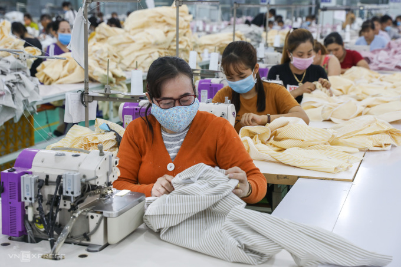

Tổng giám đốc Tập đoàn Dệt may Việt Nam (Vinatex) cho biết, 2023 là năm khó khăn nhất trong lịch sử ngành dệt may và tập đoàn này.
"30 năm thành lập Vinatex, chưa bao giờ chúng tôi phải đối diện khó khăn như 2023, kịch bản xấu nhất đã xảy ra và nhiều đơn vị chưa biết điểm dừng khó khăn là lúc nào", ông Cao Hữu Hiếu, Tổng giám đốc Vinatex chia sẻ tại buổi họp báo, ngày 8/1.
Theo ông, 2020-2021 - thời điểm dịch Covid-19 bùng nổ, cả thế giới, Việt Nam cùng đóng cửa phòng dịch nhưng doanh nghiệp vẫn "sống" được nhờ đơn hàng khẩu trang, trang phục phòng dịch.
Nhưng 2023 là câu chuyện khác, khi kinh tế thế giới và trong nước chịu ảnh hưởng tiêu cực của các cuộc xung đột địa chính trị. Đây là năm đầu tiên xuất khẩu dệt may Việt Nam giảm tới 11%, đạt 40 tỷ USD.
Kinh tế cũng "ngấm" sau đại dịch dẫn tới suy thoái tại nhiều quốc gia. Nhu cầu tiêu dùng giảm mạnh, hành vi tiêu dùng, nhất là với ngành may mặc, thời trang, thay đổi hoàn toàn. Các thị trường xuất khẩu truyền thống của dệt may Việt Nam như Mỹ, châu Âu giảm rất sâu.
Trong bối cảnh này, doanh thu và lợi nhuận trước thuế của Vinatex vẫn vượt kế hoạch lần lượt 4% và 2%. Song so với năm 2022, mức lãi giảm tới 60%, chỉ đạt 377 tỷ đồng.
"Nhiều kịch bản được chúng tôi đưa ra từ đầu năm, nhưng không ngờ diễn biến thực tế thị trường lại theo kịch bản xấu nhất, ảnh hưởng lớn tới sản xuất, kinh doanh", CEO Vinatex giãi bày.
Ông Cao Hữu Hiếu, Tổng giám đốc Vinatex (ngồi giữa) chia sẻ về thị trường dệt may 2023, dự báo 2024, ngày 8/1. Ảnh: Cao Nam
Thị trường không chỉ khó khăn mà các doanh nghiệp dệt may đối diện bất lợi về giá, chênh lệch tỷ giá và lãi suất so với các đối thủ cạnh tranh như Bangladesh, Ấn Độ.
Theo ông Nguyễn Đức Anh, Chánh văn phòng Hội đồng quản trị (HĐQT) Vinatex, chi phí tiền lương công nhân chiếm tỷ trọng 55% giá thành sản phẩm dệt may. Hiện mức thu nhập ngành này của Việt Nam là 330 USD một tháng, thấp hơn 90 USD so với Trung Quốc. Song mức chi phí này lại cao gấp 3 lần Bangladesh, hơn 2 lần Ấn Độ và gấp 1,8 lần chi phí lao động tại Campuchia.
Bên cạnh đó, tỷ giá VND ổn định trong khi các nước giảm, lãi suất nửa đầu năm ngoái cao hơn các nước khoảng 3%. "Các yếu tố này khiến dệt may Việt Nam bất lợi trong cạnh tranh về giá với các đối thủ, dù năng suất, chất lượng cao hơn họ 10-15%", ông Vương Đức Anh chia sẻ.
Như nhiều doanh nghiệp cùng ngành khác, Vintex buộc hy sinh lợi nhuận, cổ tức để giữ chân người lao động và đảm bảo lương không giảm quá sâu. Mức lương bình quân người lao động tập đoàn này khoảng 9,5 triệu đồng một tháng, giảm 4% so với 2022. Mức thu nhập này, theo ông Cao Hữu Hiếu, cao hơn 11% so với lương bình quân lao động cả nước (8,5 triệu đồng một người một tháng).
Ông Hiếu nhấn mạnh tới sự linh hoạt trong chuyển đổi sản xuất giữa các đơn vị. Đơn hàng nhỏ, thời gian yêu cầu nhanh 1-2 tuần, nên sắp xếp sản xuất cần linh hoạt để đáp ứng nhu cầu nhà mua hàng. "Lúc khó khăn này có đơn hàng mà không đáp ứng được thì sẽ mất khách hàng vào đối thủ cạnh tranh", ông nói.
Dự báo thị trường dệt may năm 2024, CEO Vinatex nói tín hiệu tại một số thị trường lớn, như Mỹ, đã "ấm" trở lại. Tập đoàn này đặt mục tiêu doanh thu, lợi nhuận tăng 10% so với 2023, song ông Hiếu nói đây cũng là mục tiêu thách thức vì về dài hạn "chưa thể dự báo thị trường sẽ ra sao trước những xung đột địa chính trị".

Doanh nghiệp dệt may gắng thưởng tết...
{kind=link}